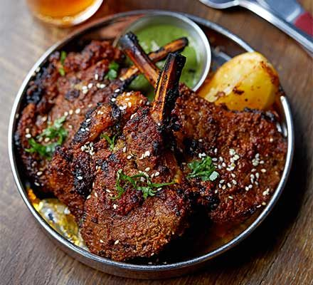

Spicy Lamb Chops Recipe

If you’re a fan of lamb and crave some spice, these tender lamb chops are
sure to satisfy your taste buds. Here’s a delightful recipe for Spicy
Pakistani Lamb Chops that you can easily make at home
Ingredients
Below are the ingredients required to make this dish for 4 people.
- Lamb chops (on the bone if possible, but boneless works too)
- Natural Greek yogurt (full fat or low fat)
- Fresh crushed garlic (or garlic puree)
- Fresh root ginger (or ginger paste/puree)
-
Spices: ground coriander, garam masala, cayenne pepper, cumin, paprika,
fenugreek
How to make simple spicy lamb chops step by step
Simple steps to make the best spicy lamb chops:
- Mix all the ingredients for the marinade
- Coat the lamb chops generously with the marinade
- Let the chops marinate for a few hours, ideally overnight
-
Once marinated overnight, take out from fridge and allow sit in room
temp for 20 mins.
- Oil Griddle pan with olive oil
-
Add lamb chops to griddle pan and cook for 6-7 minutes on each side on
medium heat
- Once the lamb chops are cooked, serve with a rice or naan bread
These flavorful lamb chops are perfect as a starter or a main meal.